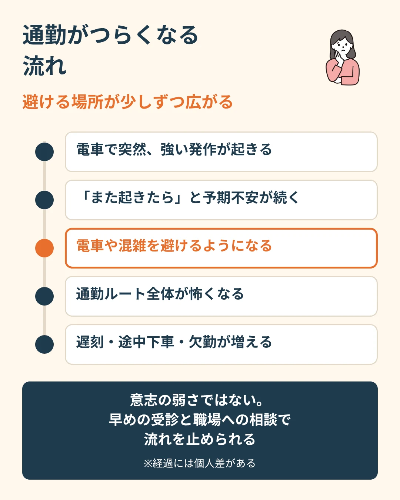
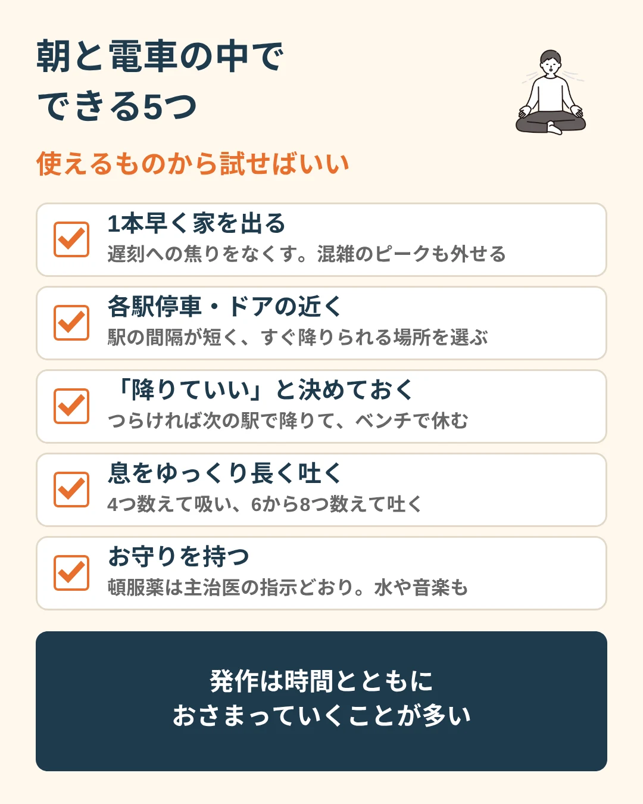
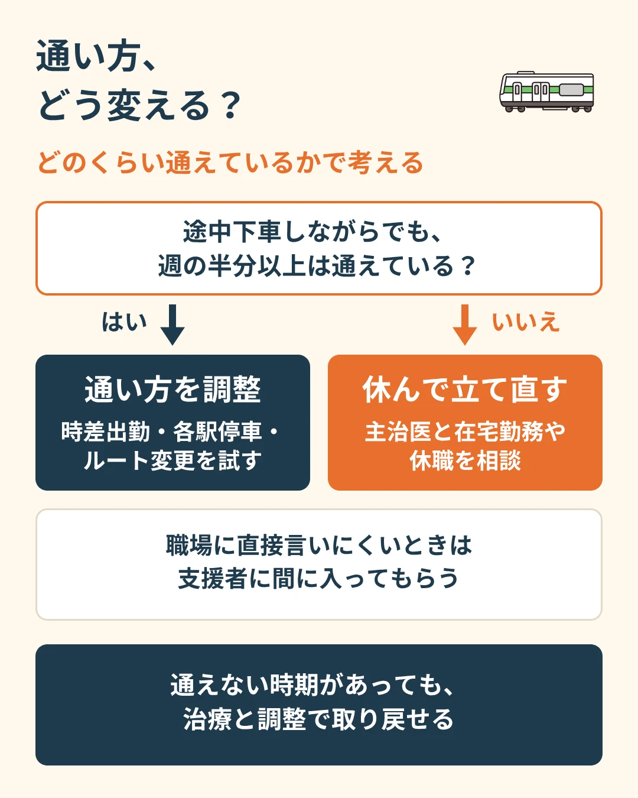
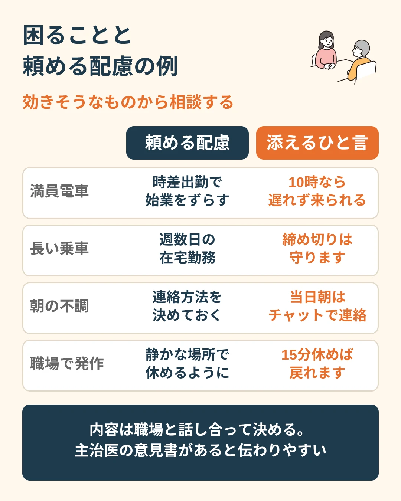
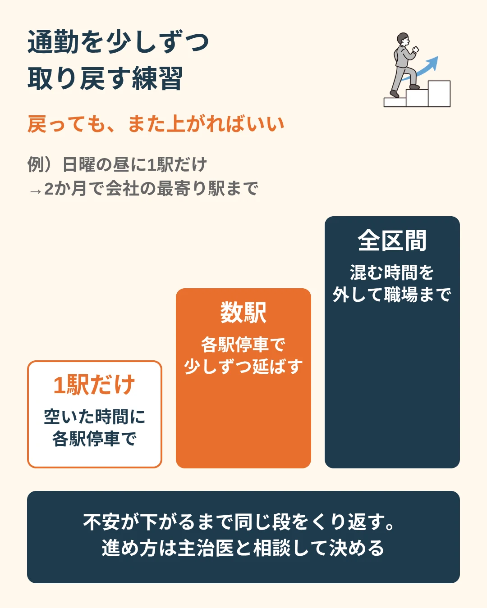

パニック障害で通勤がつらくなるのはなぜか
パニック障害では、はっきりした理由がないのに、突然強い不安とともに動悸、息苦しさ、めまい、手足のしびれ、吐き気などが一気に押し寄せる「パニック発作」が起こります。「このまま死んでしまうのでは」「気を失うのでは」と感じるほど怖いのが特徴です。発作そのものは、数分から10分ほどで強さのピークを迎え、多くは時間とともにおさまっていくと説明されます。ただ、そのあいだの恐怖はとても強く、一度経験すると忘れられません。
通勤が特につらくなるのは、ここに「予期不安」と「広場恐怖」が重なるからです。予期不安は「また発作が起きたらどうしよう」という不安が、発作のないときも続く状態です。広場恐怖は、発作が起きたときに逃げられない、助けを求めにくい場所を避けるようになる状態を指します。電車は、ドアが閉まると次の駅まで降りられず、満員なら身動きも取れません。まさに「逃げにくい場所」の代表です。

最初は「快速電車だけが怖い」だったのが、「各駅停車も怖い」「駅に向かうだけで動悸がする」と、避ける範囲が少しずつ広がっていくことがあります。遅刻や途中下車が増え、職場にどう説明すればいいか分からず、休みがちになる。こうした流れは、本人の意志が弱いからではありません。不安と体の反応が結びついて起きている状態です。パニック障害は、薬による治療や認知行動療法などで改善が期待できるとされています。「通勤がつらい」と感じ始めた段階で、早めに精神科や心療内科に相談することが、流れを止める一番の近道です。初めての受診が不安な人は精神科・心療内科の初診の流れも参考にしてください。
「急行に乗っていたとき、突然心臓がばくばくして、手がしびれてきました。次の駅まで7分。その7分が、人生で一番長かったです。それからは、電車のドアが閉まる音を聞くだけで息が浅くなるようになりました。」
発作が来そうな朝と、電車の中でできること
治療を続けながらでも、通勤の朝を少し楽にする工夫はあります。まず、時間に追われる状況をなくすことです。「遅刻するかもしれない」という焦りは、それだけで動悸を強めます。いつもより1本か2本早い電車に乗れるよう家を出れば、途中で降りても間に合う、という安心が生まれます。混雑のピークを外せるのも利点です。
次に、「つらくなったら次の駅で降りていい」と、乗る前に自分に許可を出しておくことです。降りられないと思うと不安が強まりますが、「降りてもいい」と決めておくと、意外と乗っていられることがあります。急行や快速より駅の間隔が短い各駅停車を選ぶ、ドアの近くや車両の端に立つ、といった工夫も同じ考え方です。降りたら、ベンチに座って水を飲み、落ち着くまで待ちます。遅刻の連絡は、落ち着いてからで大丈夫です。

発作が来そうなときは、息をゆっくり長く吐くことを意識します。息苦しいと、つい速く吸い込もうとしますが、それがかえって苦しさを強めることがあります。「4つ数えて吸い、6〜8つ数えて吐く」くらいのリズムで、吐く時間を長くします。足の裏が床についている感覚や、手すりの冷たさなど、今感じているものに注意を向けるのも助けになります。
主治医から頓服薬（不安が強いときに飲む薬）が処方されている場合は、いつでも飲めるように持っておくと安心につながります。使い方や量は、必ず主治医の指示に従ってください。好きな音楽、ミントのタブレット、冷たい飲み物など、自分なりの「お守り」を持つ人もいます。発作の怖さを職場の人に見られたあとの気まずさについては、発作を見られたあとの職場での向き合い方でまとめています。
通勤の負担を減らす選択肢。続ける・休むの考え方
工夫をしても通勤がつらい日が続くときは、通い方そのものを変えることを考えます。選択肢はいくつもあります。混雑する時間を外す時差出勤、自宅で働く在宅勤務（テレワーク）、電車の乗車時間が短いルートや、バス・自転車・徒歩など別の手段への切り替え、職場の近くへの引っ越しなどです。勤務日数を一時的に減らす、短時間勤務にする、という方法もあります。
どれを選ぶかの目安になるのが、今、どのくらい通えているかです。途中下車をしながらでも、週の半分以上は職場にたどり着けているなら、通い方を調整しながら続ける道があります。一方、ほとんど電車に乗れない、駅に行くだけで発作が起きる、という状態なら、無理に通い続けるより、主治医と相談して在宅勤務や休職を考えるほうが回復につながることがあります。

休職をすすめられると、「逃げているのでは」と感じる人もいます。けれど、発作と予期不安が強い時期に満員電車に乗り続けると、怖い記憶が上書きされ、かえって回復が長引くことがあります。休むことは、治療に集中して通勤を取り戻すための準備期間です。休職中や休職明けの過ごし方は休職明けの最初の1か月で解説しています。
今の職場で通い方の調整が難しい場合は、在宅勤務ができる職場への転職を考える人もいます。在宅が合うかどうかは人によって違い、通勤がない分、生活リズムが崩れたり孤独を感じたりすることもあります。向き・不向きは在宅ワークが合う人・合わない人も参考にしてください。障害者雇用の求人では、在宅勤務や時差出勤を最初から相談できる職場も増えています。
職場への配慮の頼み方と、伝えるときの文例
通い方を変えるには、職場に相談する必要があります。障害のある人が働きやすくなるための調整は「合理的配慮」と呼ばれ、障害者雇用促進法で、事業主は過重な負担にならない範囲で提供することが求められています。また、2024年4月からは改正障害者差別解消法により、民間の事業者にも合理的配慮の提供が法的な義務になりました（2026年11月時点）。障害者手帳がなくても、病気によって働くことに困りごとがあれば相談できます。
相談の前に、何に困っていて、何をお願いしたいかを整理しておきます。「通勤がつらいです」だけでは、職場も何をすればいいか分かりません。たとえば「満員の快速電車で発作が起きやすい」なら「始業を1時間遅らせて、空いている時間に通う」、「長く乗っていると不安が強くなる」なら「週2日は在宅勤務にする」というように、困りごとと配慮の内容をセットで考えます。

伝える相手は、直属の上司、人事、産業医などです。社内に産業医がいる職場では、産業医面談を通すと、医学的な視点から職場に意見を伝えてもらえることがあります。主治医に、通勤の状況や必要な配慮について意見書や診断書を書いてもらうと、話が進みやすくなります。伝えるときは、病名を詳しく説明するより、仕事への影響と、配慮があればどう働けるかを中心に話すのがコツです。
「体調の関係で、混雑した電車に長く乗ると、強い動悸や息苦しさが出ることがあります。主治医とも相談し、当面のあいだ、始業時間を10時に変更していただくか、週2日の在宅勤務をお願いできないでしょうか。業務の内容や締め切りは、これまでどおり守れるようにします。」
全部が通らなくても、別の方法を一緒に考えてもらえることがあります。決まったことは、メールなどで記録に残しておくと安心です。
職場に直接言いにくいときは、就労移行支援や就労定着支援の支援員、障害者就業・生活支援センターなどに間に入ってもらう方法もあります。配慮の頼み方の準備は合理的配慮の頼み方でも詳しく紹介しています。
通勤を少しずつ取り戻す練習と、使える制度・相談先
治療で発作が落ち着いてきたら、主治医と相談しながら、避けていた電車に少しずつ慣れていく練習をすることがあります。認知行動療法では「段階的に苦手な場面に近づく」方法がよく使われます。いきなり満員の快速電車に乗るのではなく、不安の小さいところから一段ずつ上がっていきます。
たとえば、最初の段は空いている時間に、各駅停車で1駅だけ乗ることです。慣れてきたら、2段目は各駅停車で数駅、3段目は通勤時間帯を少し外して、職場までの全区間、というように進めます。1つの段で、不安が「乗る前よりは下がってきた」と感じられるまで何度かくり返してから、次の段に進むのが目安です。途中で発作が起きても失敗ではありません。一つ前の段に戻ってやり直せば大丈夫です。進め方やペースは、必ず主治医やカウンセラーと相談して決めてください。

治療や働き方を支える制度も知っておきましょう。通院や薬の費用は、自立支援医療（精神通院医療）を使うと自己負担が原則1割になり、所得に応じて月ごとの上限も決まります。症状が続いて生活や仕事に支障がある場合は、精神障害者保健福祉手帳の対象になることがあり、障害者雇用枠での就職を考える道も開けます。どちらも申請は市区町村の窓口で、条件は主治医や窓口で確認してください（2026年11月時点）。
仕事を離れて体調を整えながら働く準備をしたい人は、就労移行支援を利用する方法もあります。事業所に通うこと自体が通勤の練習になり、在宅で利用できる事業所もあります。不安の強さと働き方の関係は、不安障害と就労でも整理しています。
家族や同居している人ができることもあります。朝、本人が駅に向かえないとき、「気の持ちようだよ」「みんな我慢してるよ」と励ますのは、本人をかえって追い詰めることがあります。それより、「今日は何駅まで行けた？」と、できたことに目を向けて聞いてもらえると、本人は次の一歩を考えやすくなります。調子の悪い朝に駅まで一緒に歩く、職場への連絡を代わりにメモしておく、といった小さな手助けも力になります。
「休職して3か月、主治医と相談して、まず日曜の昼に各駅停車で1駅だけ乗りました。それだけで汗びっしょりでした。2か月かけて会社の最寄り駅まで行けるようになり、復職後は10時出社と週1日の在宅から始めました。今でも満員電車は苦手ですが、『降りてもいい』と思えるようになって、ずいぶん楽になりました。」